My FTP Server 는 이 컴퓨터의 폴더를 FTP · FTPS · SFTP 로 공유하는 서버 프로그램입니다. 여러 폴더를 가상 경로로 묶고, 사용자마다 읽기 · 쓰기 권한을 주고, 자체 서명 인증서와 SSH 호스트 키를 만들며, 접속과 전송을 실시간 로그와 통계로 보여 줍니다. Windows · macOS · Linux 데스크톱 앱과 웹 브라우저 판이 같은 화면을 씁니다.
My FTP Server shares folders of this computer over FTP, FTPS and SFTP. It maps several folders to virtual paths, gives each user read and write rights, makes self-signed certificates and SSH host keys, and shows connections and transfers in a live log with statistics. The desktop app (Windows, macOS, Linux) and the web version share the same screen.
시작하기Getting started
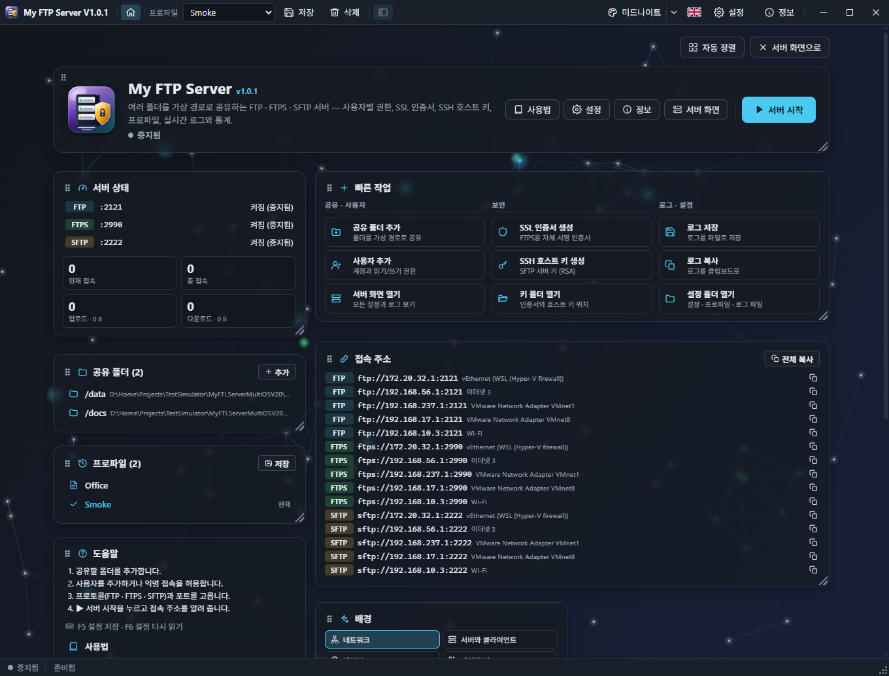
처음 실행 (5 단계)
- 공유 폴더 → 추가: 가상 이름(예:
data)과 실제 폴더를 고릅니다. 클라이언트는 이 폴더를/data/로 봅니다. - 프로토콜을 켭니다. 체크하면 표준 포트(FTP 21, FTPS 990, SFTP 22)가 채워집니다. Linux · macOS 에서 1024 미만 포트는 관리자 권한이 필요하므로 2121 / 2990 / 2222 를 권장합니다.
- 인증: 기본은 익명 접속(읽기 전용)입니다. 올리기 · 지우기가 필요하면 사용자를 추가하고 「쓰기」를 체크합니다.
- FTPS 나 「FTP에 AUTH TLS 허용」을 쓰려면 보안 → 인증서 생성을 누릅니다. SFTP 호스트 키는 처음 시작할 때 자동으로 만들어집니다.
- ▶ 서버 시작. 아래쪽 접속 주소 탭에서 주소를 복사해 클라이언트에 붙여 넣습니다.
시작 페이지
앱을 열면 움직이는 배경 위에 카드가 놓인 시작 페이지가 나옵니다. 맨 위 카드에서 서버를 시작 · 중지하고, 사용법(이 설명서) · 설정 · 정보 · 서버 화면으로 갑니다. 서버 상태, 빠른 작업(공유 · 사용자 추가, 인증서 · 호스트 키 생성, 로그 저장 · 복사, 설정 폴더), 공유 폴더, 접속 주소, 프로파일, 도움말, 배경 카드가 있습니다.
- 카드는 머리글을 끌어 옮기고, 오른쪽 아래 모서리로 크기를 바꿉니다. 「자동 정렬」은 빈틈없이 다시 배치합니다. 배치는 다음 실행에도 남습니다.
- 툴바 맨 왼쪽(앱 이름 옆)의 홈 버튼이나 「서버 화면으로」로 서버 화면과 오갑니다.
- 「시작할 때 이 페이지 표시」를 끄면 앱이 서버 화면으로 바로 열립니다.
설치와 제거
Windows 설치 프로그램은 처음에 한국어 / English 를 고릅니다. 이미 설치된 My FTP Server(이전 Electron 판 포함)가 있으면 완전히 지운 뒤 설치하고, 남아 있는 데이터(설정 · 프로파일 · 인증서 · 호스트 키 · 로그)를 지울지 묻습니다. [아니요] 를 고르면 기존 설정을 그대로 이어서 씁니다. 설치된 앱에는 Node 런타임이 들어 있으므로 Node.js 를 따로 설치할 필요가 없습니다.
First run (five steps)
- Shared folders → Add: pick a virtual name (e.g.
data) and a real folder. Clients see the folder as/data/. - Turn on the protocols. Ticking one fills in its standard port (FTP 21, FTPS 990, SFTP 22). Ports below 1024 need administrator rights on Linux and macOS, so 2121 / 2990 / 2222 are a good choice there.
- Authentication: anonymous access (read-only) is on by default. Add a user and tick “Write” for uploads and deletes.
- For FTPS or “Allow AUTH TLS on FTP”, press Security → Generate certificate. The SFTP host key is created on the first start.
- ▶ Start server. Copy an address from the Addresses tab at the bottom into the client.
The start page
The app opens on a start page: cards over a moving background. The top card starts and stops the server and leads to the User guide (this window), Settings, About and the server view. Further cards show the server status, quick actions (add a share or a user, generate a certificate or host key, save or copy the log, open the settings folder), the shares, the addresses, the profiles, help and the background.
- Drag a card by its header to move it; drag its bottom-right corner to resize it. “Auto arrange” packs the cards again. The layout is kept.
- The Home button at the left of the toolbar (next to the app name) and “To the server view” switch between the start page and the server view.
- Untick “Show this page at start” to open the app on the server view.
Installing and removing
The Windows installer first asks for Korean or English. An installed My FTP Server (the earlier Electron build too) is removed completely first, and you are asked whether to delete its data (settings, profiles, certificate, host key, log). Choose [No] to keep using your settings. The installed app carries its own Node runtime: Node.js need not be installed.
화면 구성The server view
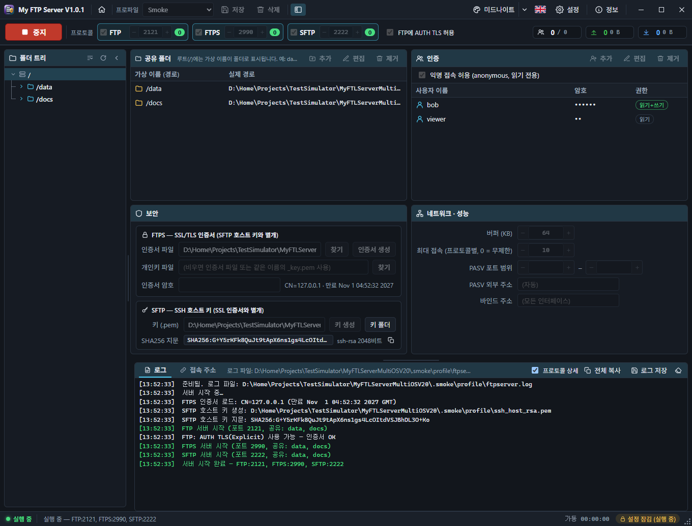
| 영역 | 설명 |
|---|---|
| 툴바 | 창의 제목 표시줄을 대신합니다. 앱 이름, 홈(시작 페이지 ⇄ 서버 화면), 프로파일(선택 · 저장 · 삭제), 폴더 트리 접기, 테마, 언어, 설정, 정보, 창 버튼. 빈 곳을 끌면 창이 움직이고 두 번 누르면 최대화됩니다. |
| 제어 바 | ▶ 시작 / ■ 중지, 프로토콜 스위치와 포트, 실행 중 접속 수, 「FTP에 AUTH TLS 허용」, 오른쪽에 통계(현재 · 총 접속, 업로드 · 다운로드 수와 용량). 언제나 한 줄입니다. |
| 폴더 트리 (왼쪽) | 클라이언트가 보는 트리: / 아래 공유 폴더, 그 아래 실제 폴더와 파일. 두 번 누르면 탐색기에서 엽니다. |
| 공유 폴더 · 인증 | 가상 이름 → 실제 폴더 표, 익명 접속 스위치와 사용자 표. |
| 보안 · 네트워크 | FTPS 인증서와 SFTP 호스트 키, 버퍼 · 최대 접속 · PASV · 바인드 주소. |
| 로그 / 접속 주소 | 아래쪽 두 탭. 로그는 시간이 붙은 기록, 접속 주소는 클라이언트가 쓸 URL 목록. |
| 상태 표시줄 | ● 실행 중 / ○ 중지됨, 상태 메시지, 가동 시간, 🔒 설정 잠김, 오른쪽 아래 크기 조절 그립. |
서버가 실행 중일 때는 모든 설정이 잠깁니다. 바꾸려면 먼저 ■ 중지하세요. 접속자가 있으면 중지 전에 확인 창이 뜹니다.
| Area | What it does |
|---|---|
| Toolbar | Replaces the window's title bar: app name, Home (start page ⇄ server view), profiles (choose · save · delete), the folder-tree toggle, theme, language, Settings, About and the window buttons. Drag an empty spot to move the window; double-click to maximize. |
| Control bar | ▶ Start / ■ Stop, the protocol switches and ports, live connection counts, “Allow AUTH TLS on FTP”, and on the right the statistics (current and total connections, uploads and downloads with sizes). Always one line. |
| Folder tree (left) | The tree clients see: the shares under /, then the real folders and files. Double-click opens the item in the file manager. |
| Shares · Authentication | Virtual name → real folder; the anonymous switch and the users. |
| Security · Network | FTPS certificate and SFTP host key; buffer, connection limit, PASV and bind address. |
| Log / Addresses | Two tabs at the bottom: the timestamped log, and the URLs clients connect to. |
| Status bar | ● Running / ○ Stopped, the status message, uptime, 🔒 settings locked, and the resize grip at the bottom-right. |
While the server runs, every setting is locked. Press ■ Stop first to change them. With clients connected you are asked before stopping.
인증과 권한Authentication and rights
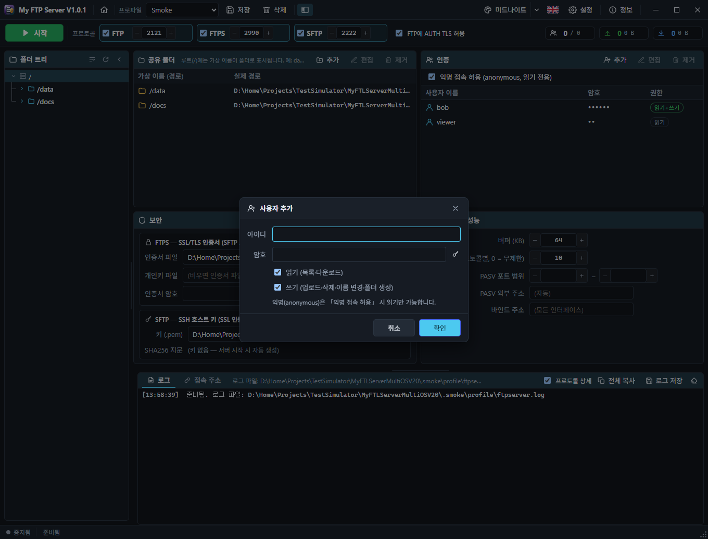
| 계정 | 접속 | 권한 |
|---|---|---|
anonymous | 「익명 접속 허용」이 켜져 있을 때. 암호는 아무 값(SFTP 는 암호 없이) | 읽기 전용 — 목록 · 다운로드만. 올리기 · 폴더 만들기 · 지우기 · 이름 바꾸기는 거부됩니다 |
| 등록 사용자 | 이름은 대소문자 무시, 암호는 정확히 일치 | 「읽기」 / 「쓰기」 조합. 쓰기만 있으면 목록 · 다운로드가 거부됩니다 |
- 거부된 로그인 · 읽기 · 쓰기는 로그에 「로그인 실패」 / 「읽기 거부」 / 「쓰기 거부」로 남습니다.
- 암호는 설정 파일에 base64 로만 감춰집니다(암호화가 아님). 여러 사람이 쓰는 컴퓨터에서는 설정 폴더 권한에 주의하세요.
| Account | Log-in | Rights |
|---|---|---|
anonymous | When “Allow anonymous” is on. Any password (SFTP: none) | Read-only: listing and downloads. Uploads, new folders, deletes and renames are refused |
| Registered user | Name case-insensitive, password exact | Any mix of “Read” and “Write”. Write-only users cannot list or download |
- Refused log-ins, reads and writes appear in the log as “Login failed”, “Read denied” and “Write denied”.
- Passwords are only hidden with base64 in the settings file, not encrypted. Mind the settings folder's permissions on a shared computer.
프로토콜과 접속 주소Protocols and addresses
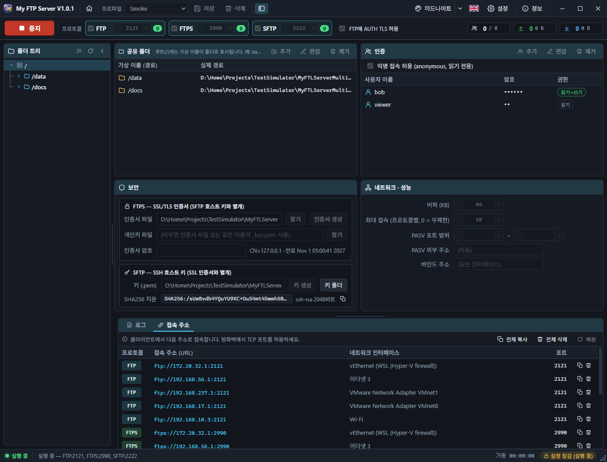
FTP
평문 FTP(기본 21). 수동(PASV · EPSV)과 능동(PORT · EPRT) 모드, 이어받기(REST), 이름 바꾸기, MLSD · MLST · MDTM · SIZE · APPE 를 지원합니다.
FTPS
| 방식 | 서버 설정 | 클라이언트 설정 |
|---|---|---|
| Explicit (AUTH TLS) | FTP 를 켜고 「FTP에 AUTH TLS 허용」 + 인증서 | “명시적 FTP over TLS”, FTP 포트. PROT P 로 데이터도 암호화 |
| Implicit (기본 990) | FTPS 를 켜고 인증서 | “암시적 FTP over TLS”, 처음부터 TLS |
인증서가 없거나 읽지 못하면 FTPS 는 시작이 거부되고, Explicit 만 쓰는 FTP 는 경고를 남기고 평문으로 시작합니다. 자체 서명 인증서는 클라이언트에서 한 번 “신뢰” 해야 합니다.
SFTP
SSH 의 sftp 하위 시스템만 제공합니다(기본 22). 셸 · 명령 실행 · 포트 포워딩 · 공개키 인증은 거부됩니다. 클라이언트가 처음 접속할 때 보여 주는 호스트 키 지문이 보안 → SHA256 지문과 같은지 확인하세요.
접속 주소
로그 옆 「접속 주소」 탭은 이 컴퓨터의 IPv4 주소마다 켜진 프로토콜의 ftp:// · ftps:// · sftp:// URL 을 한 줄씩 보여 줍니다. 행의 ⧉ 나 「전체 복사」로 복사하고, 쓸모없는 주소(가상 어댑터 등)는 🗑 로 지울 수 있습니다(「복원」으로 되돌림).
FTP
Plain FTP (21 by default). Passive (PASV, EPSV) and active (PORT, EPRT) mode, resume (REST), renames, MLSD, MLST, MDTM, SIZE and APPE.
FTPS
| Kind | Server | Client |
|---|---|---|
| Explicit (AUTH TLS) | FTP on, “Allow AUTH TLS on FTP” and a certificate | “Explicit FTP over TLS” on the FTP port; PROT P encrypts the data too |
| Implicit (990 by default) | FTPS on and a certificate | “Implicit FTP over TLS”: TLS from the start |
Without a readable certificate FTPS refuses to start, while FTP with only explicit TLS starts in plain text with a warning. Clients must trust a self-signed certificate once.
SFTP
Only the SSH sftp subsystem (22 by default). Shells, commands, port forwarding and public-key log-in are refused. Check that the host key fingerprint a client shows on its first connection matches Security → SHA256 fingerprint.
Addresses
The “Addresses” tab next to the log lists one ftp://, ftps:// or sftp:// URL per enabled protocol and IPv4 address of this computer. Copy a row with ⧉ or all of them with “Copy all”; remove useless ones (virtual adapters…) with 🗑 and bring them back with “Restore”.
인증서와 호스트 키Certificates and host keys
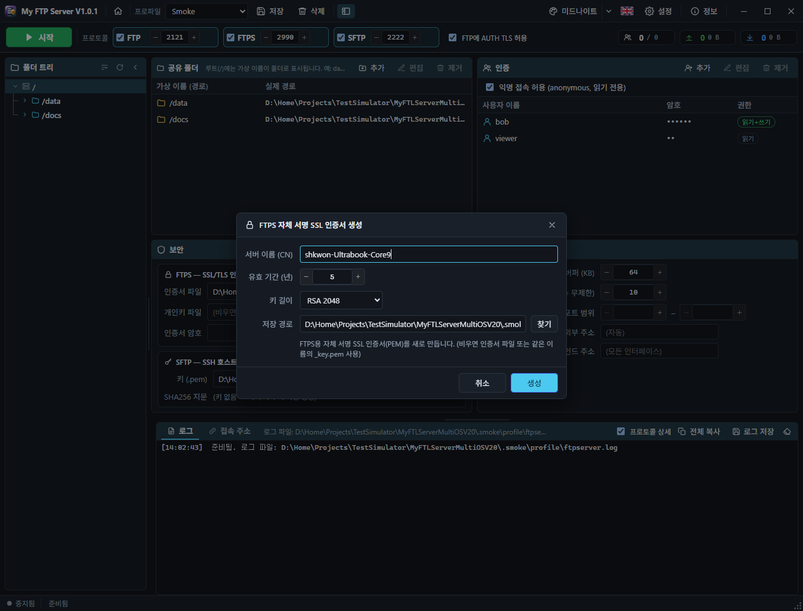
FTPS 인증서
- 인증서 생성: CN(기본: 컴퓨터 이름), 유효 기간(1~30년), 키 길이(RSA 2048 / 4096), 저장 경로를 정하면
server_cert.pem과server_cert_key.pem이 만들어지고 「인증서 파일」이 채워집니다. - 기존 인증서는 「찾기」로
.pem·.crt·.cer·.pfx·.p12를 고릅니다..pfx와 암호화된 키는 「인증서 암호」가 필요합니다. - 인증서 칸 아래에 주체와 만료일(또는 오류)이 표시됩니다.
SFTP 호스트 키
- 비워 두면 설정 폴더의
ssh_host_rsa.pem을 쓰고, 없으면 첫 시작 때 만듭니다. - 키 생성은 새 키로 교체합니다. 그러면 클라이언트마다 “호스트 키가 바뀌었다” 는 경고가 뜨므로 꼭 필요할 때만 쓰세요.
- ⧉ 로 SHA256 지문을 복사해 사용자에게 알려 줄 수 있습니다.
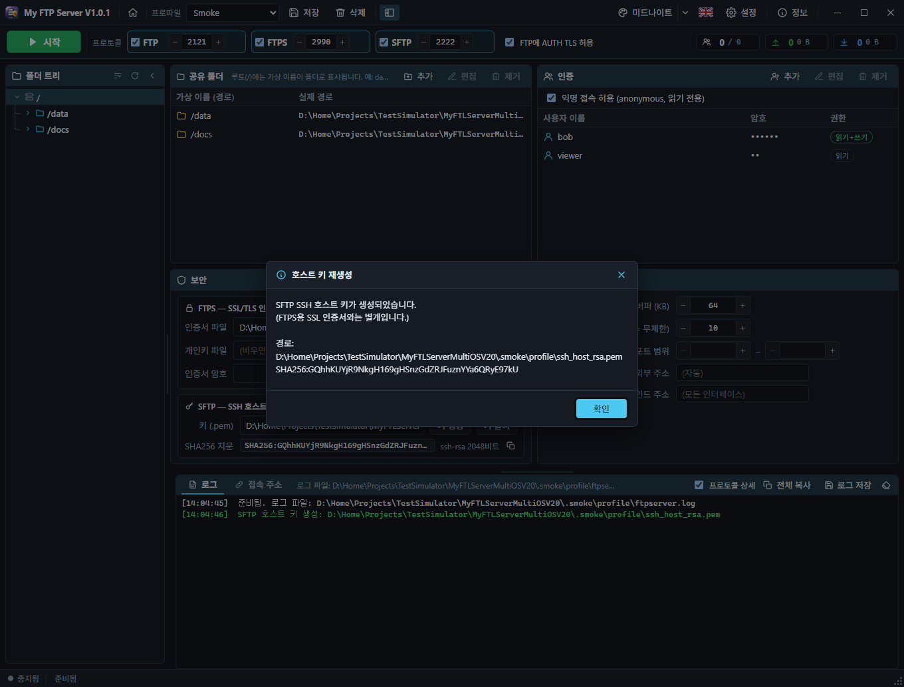
FTPS certificate
- Generate certificate: choose the CN (the computer name by default), validity (1–30 years), key size (RSA 2048 / 4096) and where to save;
server_cert.pemandserver_cert_key.pemare written and “Certificate file” is filled in. - To use an existing certificate, “Browse” for a
.pem,.crt,.cer,.pfxor.p12. A.pfxor an encrypted key needs the “Certificate password”. - The subject and expiry date (or the error) appear under the certificate field.
SFTP host key
- Left empty,
ssh_host_rsa.pemin the settings folder is used, created on the first start. - Generate key replaces the key. Every client then warns that the host key changed, so only do it when needed.
- ⧉ copies the SHA256 fingerprint to hand to your users.
네트워크 · 성능Network and performance
| 항목 | 내용 |
|---|---|
| 버퍼 (KB) | FTP · FTPS 전송 버퍼. 4 ~ 4096, 기본 64 |
| 최대 접속 | 프로토콜별 동시 접속 상한(0 = 무제한). 넘으면 FTP 는 421, SFTP 는 연결을 끊습니다 |
| PASV 포트 범위 | 수동 모드 데이터 연결의 포트 범위(비우면 임의). 방화벽 · 공유기에서 FTP 포트와 함께 이 범위를 열어야 밖에서 목록 · 전송이 됩니다 |
| PASV 외부 주소 | NAT 뒤에서 알릴 공인 IPv4. 같은 사설망의 클라이언트에는 자동으로 로컬 주소를 알립니다 |
| 바인드 주소 | 받을 로컬 IP(비우면 모든 인터페이스). 127.0.0.1 이면 이 컴퓨터만 |
숫자 칸은 좌우의 − / + 버튼으로도 바꿉니다.
| Field | Meaning |
|---|---|
| Buffer (KB) | FTP / FTPS transfer buffer, 4–4096, 64 by default |
| Max connections | Per protocol (0 = unlimited). Beyond it FTP answers 421 and SFTP closes the connection |
| PASV port range | Ports for passive data connections (empty = any). Open this range together with the FTP port in the firewall or router, or listings and transfers fail from outside |
| PASV external address | The public IPv4 announced behind NAT. Clients on the same private network get the local address automatically |
| Bind address | The local IP to listen on (empty = all interfaces). 127.0.0.1 = this computer only |
Number fields also change with their − / + buttons.
시작 · 로그 · 통계Running, log and statistics
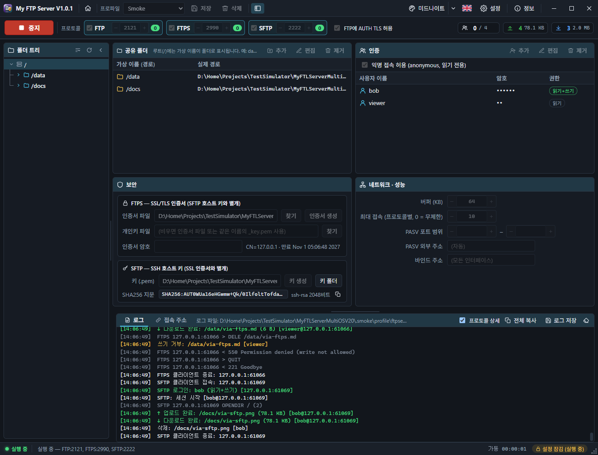
시작과 중지
▶ 시작을 누르면 설정을 검사한 뒤 켜진 프로토콜을 한꺼번에 띄웁니다. 하나라도 실패하면(포트 사용 중 등) 이미 뜬 것도 모두 닫고 「서버 시작 오류」 창에 원인을 보여 줍니다. ■ 중지는 모든 연결을 끊습니다.
로그
- 로그는 화면(최근 3000줄)과
ftpserver.log파일에 남습니다. 「프로토콜 상세」를 켜면 명령 · 응답 줄도 보입니다(파일에는 기록되지 않음). - 「전체 복사」는 클립보드로, 「로그 저장」은 파일로 내보냅니다. ⌫ 는 화면만 비웁니다. 위쪽 분할 바를 끌어 로그 높이를 바꿉니다.
통계
제어 바 오른쪽은 서버를 시작한 뒤의 현재 · 총 접속 수, 업로드 · 다운로드 수와 용량입니다. FTP · FTPS · SFTP 를 모두 셉니다.
Starting and stopping
▶ Start checks the settings, then brings up every enabled protocol together. If one fails (a port in use…), the others are closed again and the “Server start error” window explains why. ■ Stop disconnects everyone.
Log
- The log is kept on screen (last 3000 lines) and in
ftpserver.log. “Protocol detail” also shows commands and replies (never written to the file). - “Copy all” copies to the clipboard, “Save log” writes a file, ⌫ clears the screen. Drag the splitter above it to change its height.
Statistics
The right of the control bar counts, since the start, current and total connections and the number and size of uploads and downloads, over FTP, FTPS and SFTP.
프로파일Profiles
- 저장: 공유 · 프로토콜 · 사용자 · 보안 · 네트워크 설정 전체를 이름으로 저장합니다. 같은 이름이면 덮어씁니다.
- 툴바 목록이나 시작 페이지의 프로파일 카드에서 고르면 그 설정이 현재 설정이 됩니다.
- 삭제: 선택한 프로파일 파일만 지웁니다(현재 설정은 유지).
설정은 바꿀 때마다 자동으로 server_settings.json 에 저장됩니다. F5 는 지금 저장, F6 은 파일에서 다시 읽기입니다.
- Save stores all shares, protocols, users, security and network settings under a name, replacing a profile of the same name.
- Pick one in the toolbar list or on the start page's Profiles card to make it the current settings.
- Delete removes the selected profile file only (the current settings stay).
Settings are saved to server_settings.json as you change them. F5 saves now, F6 reloads the file.
테마 · 언어 · 배경Themes, language and backgrounds
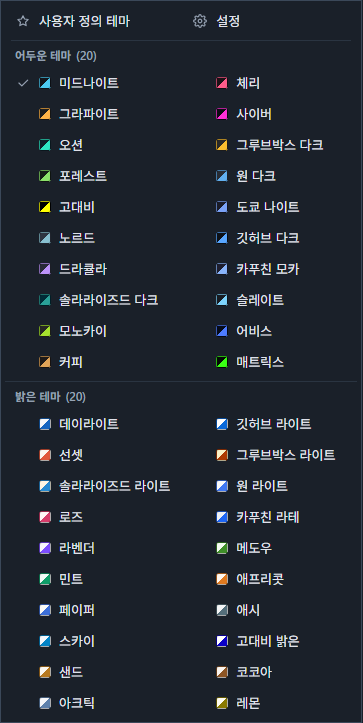
테마
- 툴바의 테마 버튼은 다음 테마로 넘어가고, 옆의 ▾ 는 테마 목록을 엽니다. 어두운 테마 20개와 밝은 테마 20개가 한 줄에 10개씩 두 줄로 놓입니다.
- 목록 맨 위에는 사용자 정의 테마(만든 테마들과 「사용자 정의 테마」 만들기 버튼)와 설정 버튼이 있습니다.
사용자 정의 테마
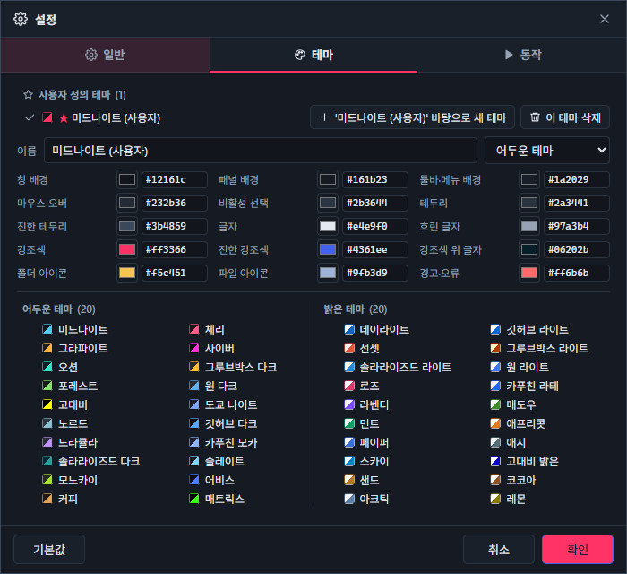
설정 › 테마 탭 맨 위에서 「… 바탕으로 새 테마」를 누르면 현재 테마를 복사한 새 테마가 만들어집니다. 이름, 어두운 · 밝은 테마 여부, 창 배경 · 패널 · 글자 · 강조색 등 15가지 색을 바꾸면 바로 미리 보입니다. 「확인」으로 저장하고 「취소」하면 원래대로 돌아갑니다.
언어
툴바의 국기 버튼은 바꿀 언어(한국어 ⇄ English)의 국기입니다. 화면과 로그 메시지가 함께 바뀝니다.
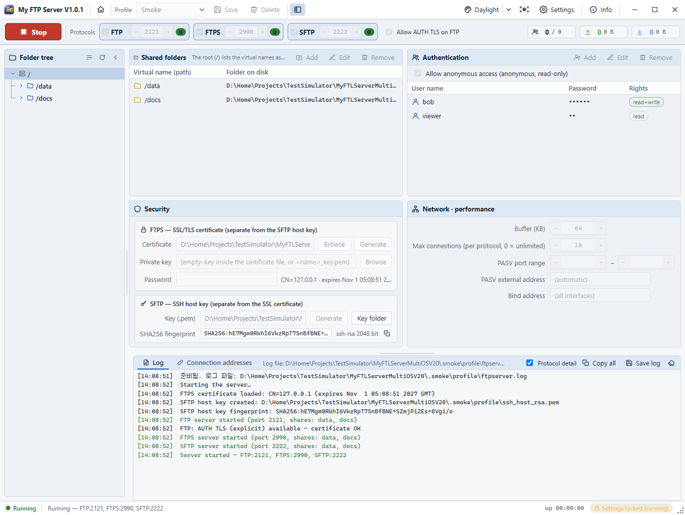
시작 페이지 배경
배경 카드에서 21가지 움직이는 배경(네트워크, 서버와 클라이언트, 레이더, 데이터 비, 지구, 파일 전송, 회로, 신호 파형, 별자리, 오로라, 육각 격자, 위성 링크, 데이터 터널, 트래픽 그래프, 폴더 트리, 동기화, 암호화, 워프, 와이어 지형, 광섬유, 신호 송출)을 고르고, 속도 · 투명도, 섞기 간격(− 20초 + 처럼 초 단위), 시작할 때 무작위 배경을 정합니다.
Themes
- The theme button on the toolbar moves to the next theme; the ▾ beside it opens the list: 20 dark and 20 light themes, ten a row in two rows each.
- On top of the list are the custom themes (yours, and a “Custom theme” button that makes one) and a Settings button.
Custom themes
At the top of Settings › Theme, “New theme from …” copies the current theme into a new one. Change its name, dark or light, and its 15 colours (window background, panels, text, accent…) and see them at once. OK keeps it; Cancel puts everything back.
Language
The flag on the toolbar is the language you switch to (Korean ⇄ English). The screen and the log messages change together.
Start page background
The Background card offers 21 moving backgrounds (network, server and clients, radar, data rain, globe, file transfer, circuit, signal waves, constellation, aurora, hex grid, satellite link, data tunnel, traffic graph, folder tree, sync, encryption, warp, wire terrain, fibre optics, broadcast), their speed and transparency, a shuffle interval (in seconds, − 20 s + style) and a random background at start.
설정Settings
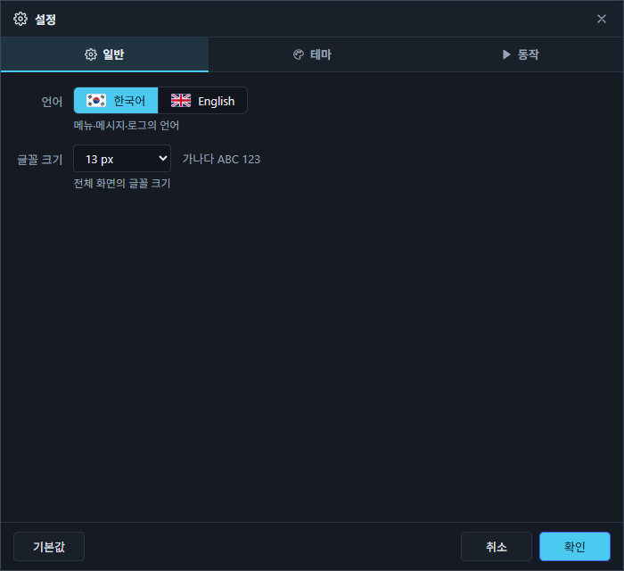
| 탭 | 항목 |
|---|---|
| 일반 | 언어, 글꼴 크기 |
| 테마 | 사용자 정의 테마(만들기 · 삭제 · 이름 · 색), 어두운 테마 20개, 밝은 테마 20개 |
| 동작 | 접속자가 있을 때 중지 전 확인, 앱 시작 시 서버 자동 시작, 창을 닫아도 서버 유지(트레이로), 알림음, 시작할 때 시작 페이지 표시 |
「기본값」은 보고 있는 탭의 항목만 되돌립니다(사용자 정의 테마는 지우지 않음).
| Tab | Fields |
|---|---|
| General | Language, font size |
| Theme | Custom themes (new, delete, name, colours), 20 dark and 20 light themes |
| Behaviour | Ask before stopping with clients connected, start the server with the app, keep serving when the window closes (tray), sounds, show the start page at start |
“Defaults” resets the fields of the visible tab only (custom themes are kept).
웹 버전The web version
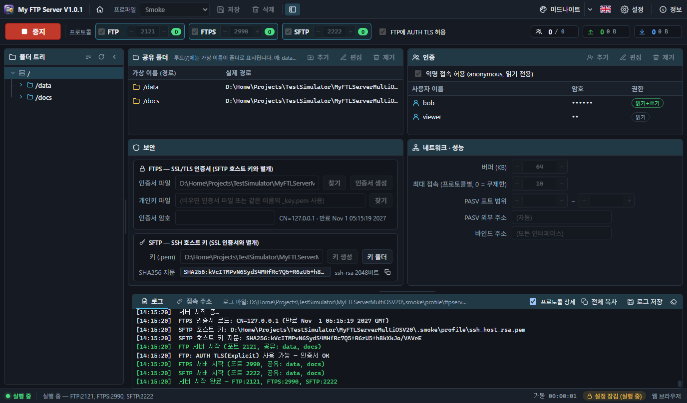
node server/server.js # http://127.0.0.1:5190 node server/server.js --host 0.0.0.0 --port 8080 --token 비밀값 --no-open --autostart
- FTP · FTPS · SFTP 는
server.js를 실행한 컴퓨터에서 돌고, 브라우저는 원격 제어판입니다. 경로와 「찾기」는 그 컴퓨터 기준입니다. - 다른 컴퓨터에서 관리하려면 반드시
--token을 주고?token=비밀값으로 접속하세요. --autostart는 프로세스가 뜨자마자 저장된 설정으로 시작합니다(NAS · 부팅 스크립트용).
node server/server.js # http://127.0.0.1:5190 node server/server.js --host 0.0.0.0 --port 8080 --token secret --no-open --autostart
- FTP, FTPS and SFTP run on the computer that runs
server.js; the browser is a remote control panel. Paths and “Browse” are that computer's. - To manage it from another computer, always give
--tokenand open?token=secret. --autostartstarts the servers with the saved settings as soon as the process is up (NAS, boot scripts).
문제 해결과 데이터Troubleshooting and data
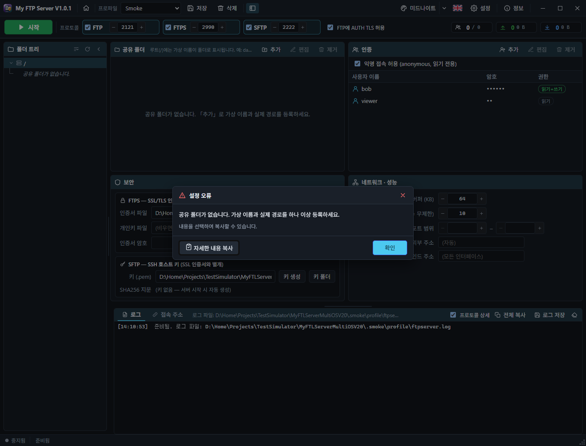
자주 보는 문제
| 증상 | 확인할 것 |
|---|---|
| 「포트 N이(가) 이미 사용 중」 | 같은 포트를 쓰는 다른 프로그램(IIS FTP, OpenSSH 서버 등)을 멈추거나 포트를 바꿉니다 |
| 「바인드할 권한이 없습니다」 | Linux · macOS 의 1024 미만 포트 — sudo 로 실행하거나 2121 / 2990 / 2222 사용 |
| 접속은 되는데 목록 · 전송이 안 됨 | 방화벽에서 PASV 포트 범위 허용, NAT 뒤라면 PASV 외부 주소 지정 |
| 익명으로 올리기가 안 됨 | 정상입니다(읽기 전용). 쓰기 권한이 있는 사용자를 추가하세요 |
| SFTP 호스트 키 경고 | 키를 새로 만들었기 때문. 클라이언트의 known_hosts 항목을 갱신합니다 |
| 창을 닫았는데 서버가 계속 돔 | 「창을 닫아도 서버 유지」가 켜진 상태. 트레이 아이콘 우클릭 → 종료 |
데이터 파일
설정 폴더(정보 창에 표시): Windows %APPDATA%\My FTP Server, macOS ~/Library/Application Support/My FTP Server, Linux ~/.config/My FTP Server. server_settings.json(서버 설정), profiles/, session.json(언어 · 테마 · 사용자 정의 테마 · 시작 페이지), ftpserver.log, 인증서와 ssh_host_rsa.pem 이 들어 있습니다.
단축키
| 키 | 동작 |
|---|---|
| F5 / F6 | 설정 저장 / 다시 읽기 |
| Esc | 대화상자 · 목록 닫기 |
| ↑ ↓ · Enter · Delete | 표에서 선택 이동 · 편집 · 제거 |
Common problems
| Symptom | What to check |
|---|---|
| “Port N is already in use” | Stop the other program on that port (IIS FTP, an OpenSSH server…) or change the port |
| “No permission to bind” | Ports below 1024 on Linux and macOS: run with sudo or use 2121 / 2990 / 2222 |
| Log-in works but listings and transfers fail | Open the PASV port range in the firewall; behind NAT set the PASV external address |
| Anonymous uploads fail | As intended (read-only). Add a user with write rights |
| SFTP host key warning | The key was regenerated. Update the client's known_hosts entry |
| The server keeps running after closing the window | “Keep serving when the window closes” is on. Right-click the tray icon → Quit |
Data files
The settings folder (shown in About): Windows %APPDATA%\My FTP Server, macOS ~/Library/Application Support/My FTP Server, Linux ~/.config/My FTP Server. It holds server_settings.json (server settings), profiles/, session.json (language, theme, custom themes, start page), ftpserver.log, the certificate and ssh_host_rsa.pem.
Keyboard
| Key | Action |
|---|---|
| F5 / F6 | Save / reload the settings |
| Esc | Close a dialog or list |
| ↑ ↓ · Enter · Delete | Move · edit · remove in the tables |